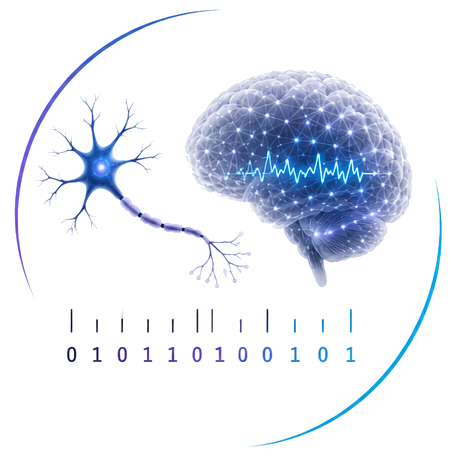

14th and 15th of July, 2026
Halifax, Canada
The following are confirmed (and tentatively confirmed) invited speakers for the workshop. We will add contributed short talks closer to the event (as per below).
Call for contributions is now open.
In addition to our invited speakers, we are now calling for contributed short talks. If you are interested in contributing a talk, please send a title and abstract to Joseph Lizier (joseph.lizier@sydney.edu.au) and Marilyn Gatica (marilyn.gatica@nulondon.ac.uk).
We will review submissions weekly starting May 25, and the call will remain open until all available slots have been filled.
To be announced later
More to come soon!
Leyla Roksan Caglar - "Same Compression Principle, Different Geometry: Rate-Distortion Signatures Dissociate Biological and Artificial Visual Systems"
Efficient coding theory predicts that biological perceptual systems compress sensory input
optimally under resource constraints, with the systematic structure of errors reflecting the
geometry of that compression. Here we operationalize this principle using rate-distortion theory
(RDT) to characterize how any system - biological or artificial - trades representational fidelity for
informational efficiency. Treating stimulus-response behavior as an effective communication
channel, we derive rate-distortion (RD) frontiers directly from confusion matrices and summarize
each system with three geometric signatures: slope (β), curvature (κ), and area under the RD curve
(AUC), capturing the marginal cost, abruptness, and overall efficiency of the accuracy-
compression trade-off respectively. Applying this framework to human psychophysical data and
18 deep vision models across 12 families of controlled image perturbations at graded severities,
we find that both biological and artificial systems follow a common lossy-compression principle
but occupy systematically different regions of RD space. Humans exhibit smooth, flexible trade-
offs characteristic of near-optimal efficient coding, while deep networks operate in steeper, more
brittle regimes even at matched accuracy, with geometry dissociable from performance across
training regimes. Critically, behavioral RD signatures track internal representational geometry,
since the behaviorally inferred compression structure correlates with internal representational
dissimilarity across all models. Moreover, κ dissociates from mean representational dissimilarity
under degradation and decreases as representations scatter, revealing whether representational
spread is categorically structured or noise-driven - a distinction inaccessible to accuracy or mutual
information alone. These results establish RD geometry as a compact diagnostic of perceptual
compression strategy that recovers mechanistically interpretable structure in internal
representations from behavioral input alone and extends naturally to the direct characterization of
compression geometry in neural population activity.
Nicolás Hinrichs - "Information Geometry for Inter-Brain Network Analysis in Hyperscanning"
Inter-brain synchrony during social interaction is increasingly studied via hyperscanning, yet standard synchrony
measures collapse the rich geometric structure of neural co-variation into scalar indices.
I will present HyPhi, a Python toolbox implementing information geometry and Forman-Ricci curvature for dual-EEG hyperscanning data.
Treating inter-brain connectivity as a weighted network evolving over interaction time,
HyPhi computes curvature profiles that distinguish categorically structured synchrony from noise-driven co-fluctuation,
recovering mechanistically interpretable signatures inaccessible to mutual information or coherence alone.
I will show results from live hyperscanning recordings, where inter-brain curvature indexes the degree to which two agents
share a generative model of their interaction. The approach generalises to hypergraph representations of multi-brain dynamics
and connects to broader questions about the geometry of collective inference.
Thomas Varley - "Why should we care about synergistic information?"
The phenomenon of higher-order "synergistic" information has become a source of widespread interest in neuroscience,
information theory, and the study of complex systems. Various proposals have identified synergy with:
emergent properties, information integration, and even phenomenological consciousness.
A plethora of statistical approaches have been introduced, all designed to wring synergistic information out of multivariate datasets.
Despite this attention, the specific relevance of synergy to neural and cognitive processes remains abstract.
Unlike redundancy, which readily maps onto notions of synchrony and coherence, it is less obviously clear what the presence (or absence)
of synergistic information in a dataset in telling us.
Building on prior links between synergistic information and information modification,
this talk argues that synergistic information is a statistical fingerprint of task-relevant "computation" in the brain,
occurring when signals from multiple functional systems interact to solve some kind of task.
We review evidence from neuroscience and artificial intelligence research that connects synergy with successful task performance,
as well as the mathematical links between synergy and causal colliders in the theory of causal inference.
This perspective suggests that the identification of synergistic dependencies in the brain (and other systems) may be of practical,
as well as theoretical, relevance to cognitive and clinical neuroscience.
This workshop has been run at CNS for over two decades now -- links to the websites for the previous workshops in this series are below:
Image modified from an original credited to dow_at_uoregon.edu, obtained here (distributed without restrictions); modified image available here under CC-BY-3.0